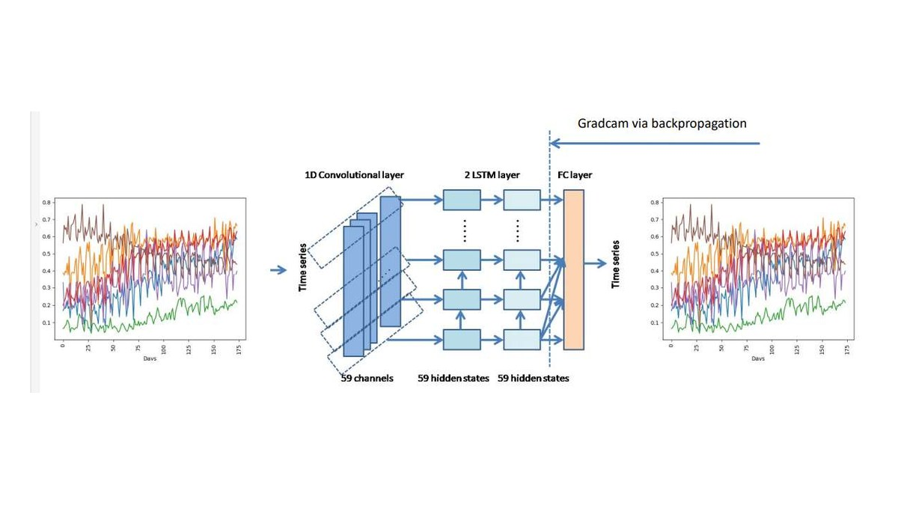
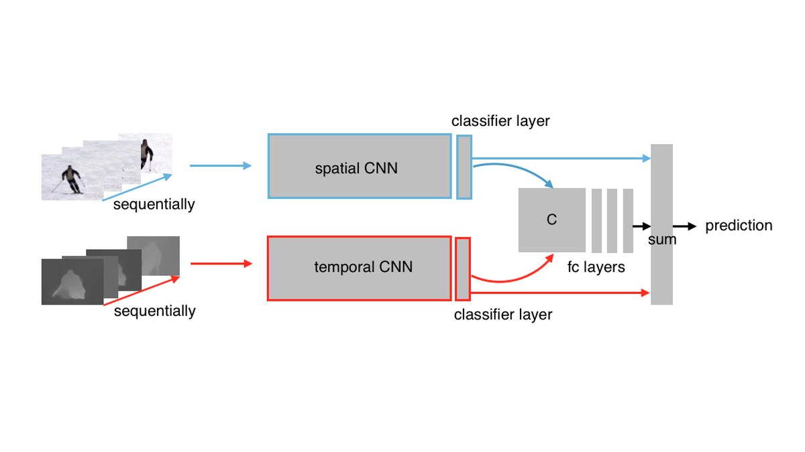
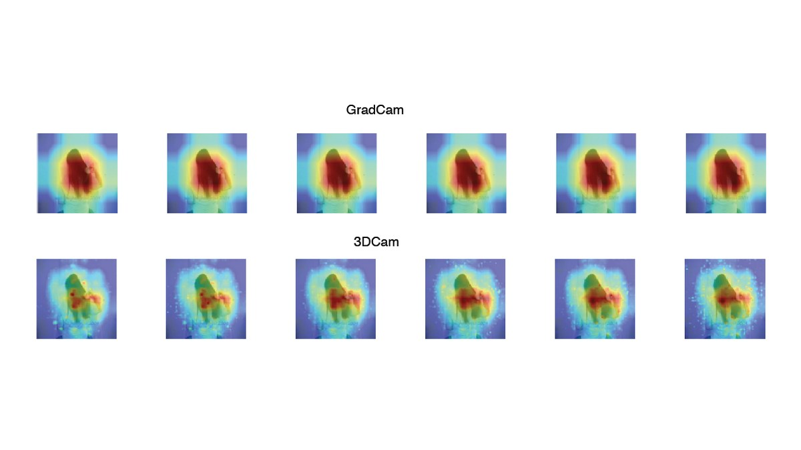
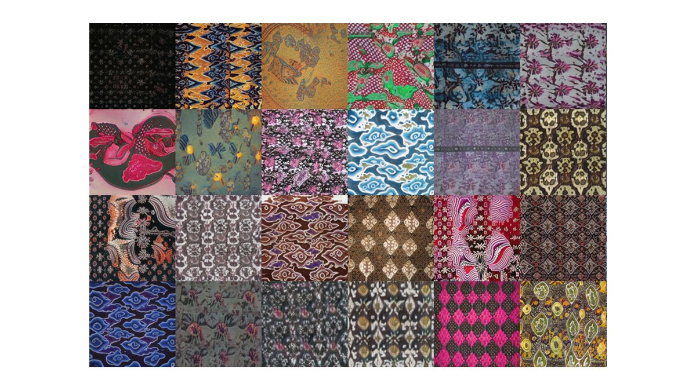

2024
Buku Ajar
Deep Learning: Teori, Contoh Perhitungan, dan Implementasi
Deepublish, Yogyakarta. ISBN 978-623-02-7968-3
Novanto Yudistira is a lecturer and researcher at the Faculty of Computer Science, Universitas Brawijaya, Indonesia. He earned a Bachelor of Computer Science in Informatics Engineering from Institut Teknologi Sepuluh Nopember, an MSc in Computer Science from Universiti Teknologi Malaysia, and a Doctor of Engineering in Information Engineering from Hiroshima University, Japan, under Prof. Takio Kurita.
His research spans pattern recognition, multimodal computer vision, medical informatics, explainable deep learning, large language and visual models, and big data analytics. He has collaborated with AIST, RIKEN, Osaka University, and other partners, and is active as founder of the Deep Learning Indonesia community. He also helps drive AI research initiatives at Universitas Brawijaya, including cross-disciplinary work around health, industry, and cultural technology.




Deepublish, Yogyakarta. ISBN 978-623-02-7968-3
Universitas Brawijaya Press. E-ISBN 978-623-296-667-3
Informatics Engineering, Institut Teknologi Sepuluh Nopember, Indonesia.
Computer Science, Universiti Teknologi Malaysia.
Information Engineering, Faculty of Engineering, Hiroshima University, Japan.
Informatics and data analytics collaboration with RIKEN and Osaka University.
Best Paper awards for generative batik restoration and new category discovery, plus Dekranasda recognition for GenBatik.
Authored and co-authored Indonesian deep learning books on foundations, implementation, and time-series prediction.